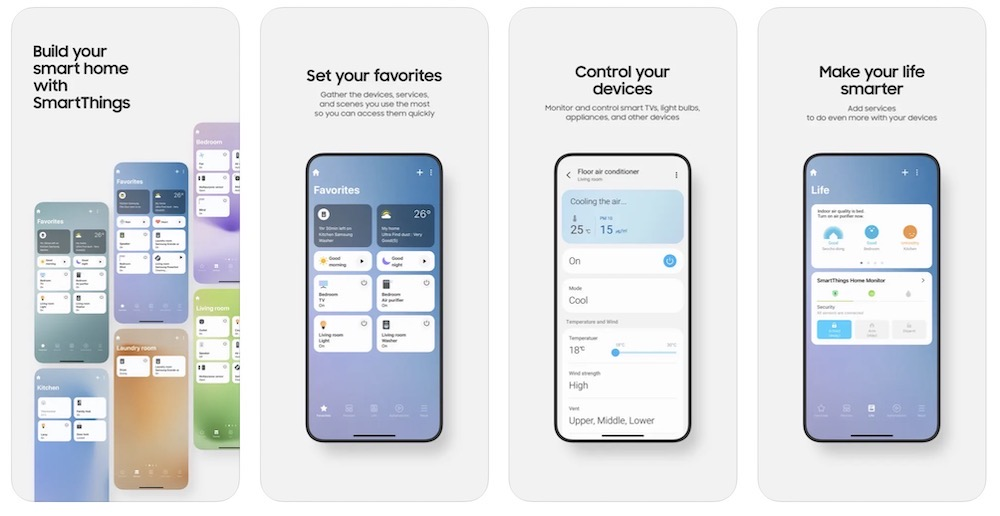

01
Smart home · iOS · 2023—present
SmartThings
Owning Settings and MapView domains for a global IoT platform. I lead technical design and delivery across device visualization, diagnostics, support, and content-driven experiences.